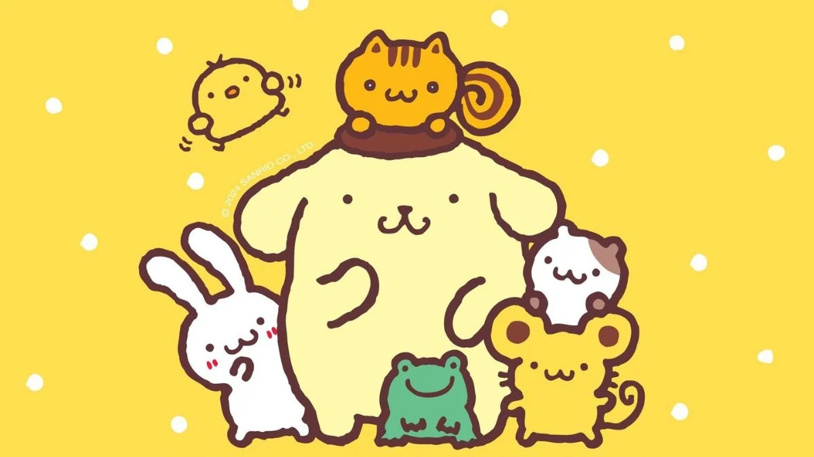

Pompompurin
Es un adorable perrito golden retriever. Siempre lleva una boina
marrón y es conocido por su personalidad relajada y amigable. Su pasatiempo favorito es dormir,
comer flanes y coleccionar cosas que encuentra interesantes. Vive en una casita dentro de la entrada
de su dueño y tiene muchos amigos, como Muffin, Scone y Bagel.